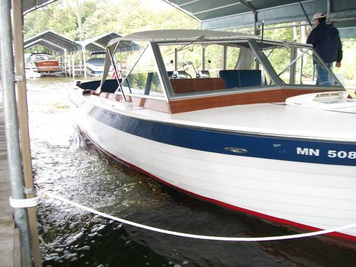

1 / 8
Featured listing
1966 Chris-Craft 28′ Sea Skiff Sportsman
$12,500
- EngineV8 MerCruiser Blue Water Edition
- Bottom12+ years old
- StorageDry indoor, last 7 years
- Recently doneCarb rebuilds · new fuel · new alternators
- StatusIn winter storage — was running great